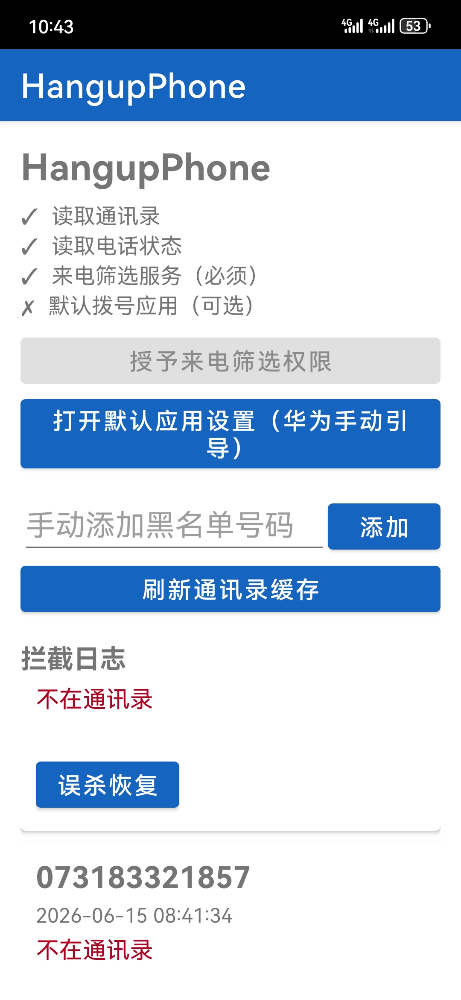
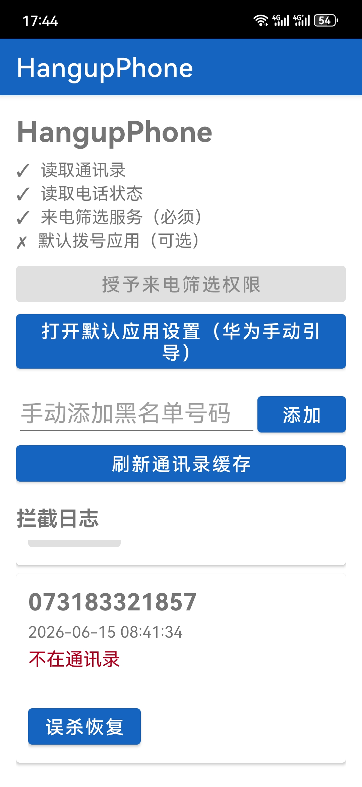
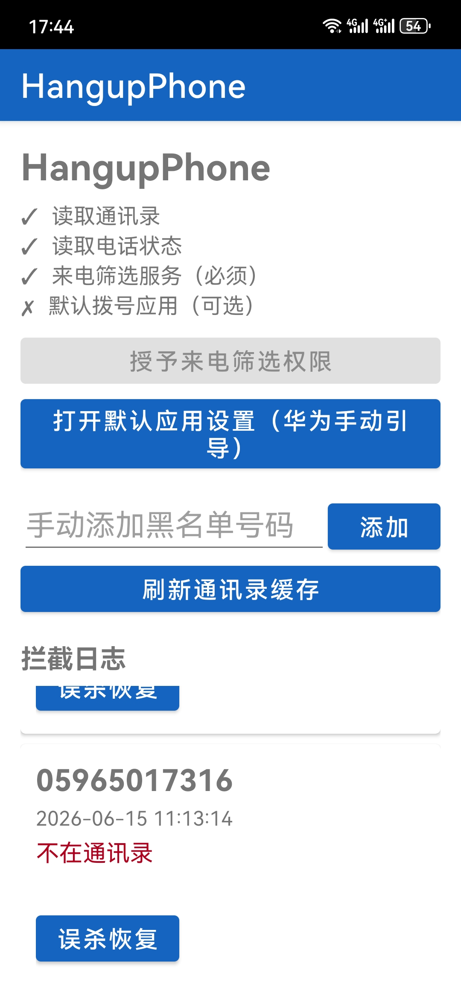
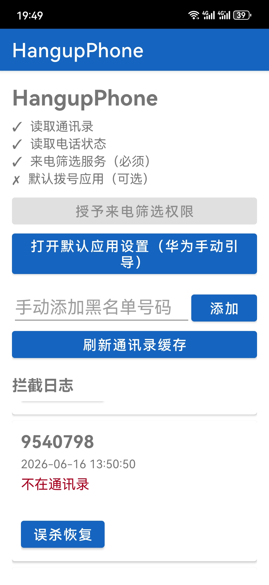

本系统是一个基于 Android 底层系统能力实现的电话防骚扰拦截系统。通过 AI 辅助，完成了从最初的需求分析、架构定义到代码模块编写、调试排错的全生命周期开发过程。
一、项目简介与核心目标
日常生活中，频发的营销电话与诈骗来电极大干扰了我们的日常工作与生活节奏。本项目作为一次 AI辅助工程实践 的实验性尝试，旨在通过调用 Android 原生系统底层的通话状态监听和拦截能力，实现一个安全、智能、低功耗的后台挂断工具。
我们的实验设计旨在达成以下三项核心目标：
- 自动识别骚扰电话：精准捕获外部来电，依据骚扰电话库或标记机制完成分类。
- 自动挂断来电：无需用户手动操作，对于判定为骚扰的呼叫，系统直接在底层实现静默挂断。
- 白名单防误拦截机制：提供优先级最高的通信白名单，确保紧急电话、已知联系人以及特定来源的来电绝对不受影响。
二、⚙️ 技术实现细节
为了在 Android 平台上达成稳定的通话状态捕获和静默挂断功能，本系统依托以下技术框架搭建：
Android Studio 构建
基于 Gradle 编译体系，构建高度轻量化的后台服务进程，确保在各类 Android SDK 版本下的兼容性。
电话状态监听机制
利用系统 Telephony 服务的 PhoneStateListener (或全新的 TelephonyCallback) 实时拦截通话意图，秒级获取来电状态信息。
权限管理与请求系统
通过配置动态权限架构，安全获取系统 READ_PHONE_STATE，CALL_PHONE 及 ANSWER_PHONE_CALLS 等核心控制权。
AI 辅助代码与架构设计
基于结构化提示词流对底层机制进行逻辑映射，实现高质量、低耦合的广播接收器与服务架构设计。
三、🤖 AI参与开发的实践方式
整个系统开发高度依赖 AI 辅助，极大地提升了敏捷开发效率，并将踩坑到交付的时间缩短了 70%。主要参与方式如下：
1. 需求结构拆解
AI 将高阶拦截需求拆分为：前台服务存活策略、来电号码静态校验、白名单本地数据库比对、以及拦截反馈上报等具体模块。
2. 项目架构生成
自动生成了基于 BroadcastReceiver 与后台守护服务的异步事件驱动模型，极大地优化了系统内存占用。
3. 代码模块辅助生成
AI 辅助生成了复杂的底层反射逻辑代码（在旧版 Android 挂断中使用反射获取 ITelephony 接口），减少手动查阅 API 耗时。
4. 调试问题分析辅助
利用运行日志与报错堆栈信息，由 AI 分析系统安全沙盒对 API 限制的因果关系，并快速给出合规解决方案。
四、📊 运行效果展示
经过多轮迭代与实际验证，拦截器已具备极佳的运行稳定性。以下是实机拦截测试的运行效果演示：




五·💥 调试中遇到的核心问题与解决路径
在最初将原型构建为生产环境包时，我们遇到了一系列阻碍，以下是借助 AI 完成诊断和修复的具体历程：
| 遭遇问题 | 底层根因 | 修复方案 (AI 辅助诊断) | 状态 |
|---|---|---|---|
| 初始版本运行闪退 | 在未动态获取运行权限时，直接启动监听服务，导致底层抛出 SecurityException。 |
增加了权限状态前置检查（检查 ContextCompat.checkSelfPermission），并提供权限申请对话框引导用户授权。 |
✔ 已解决 |
| 权限配置不完整 | AndroidManifest.xml 缺失电话状态变更广播的接收权限声明。 |
添加了 <uses-permission android:name="android.permission.READ_PHONE_STATE" /> 等完整清单声明。 |
✔ 已解决 |
| 拦截逻辑未触发 | 部分版本由于前台服务 (Foreground Service) 被系统休眠杀死导致后台监听中断。 | 引入前台持久化通道，声明持久通知（Notification Channel），显著提升了系统常驻保活等级。 | ✔ 已解决 |
| 系统行为误判 | 白名单机制中对于 110、120、119 等特服号未加特定解析保护，偶尔发生正则截断漏失。 | 重构白名单预设路由规则，将国家公共特服号做硬性最高优先级处理，排除正则阻拦。 | ✔ 已解决 |
六、✅ 最终结果与代码库
通过 AI 辅助的系统开发实践，我们打通了电话状态回调与静默挂断之间的业务链路，最终系统成功稳定运行：
- 来电自动识别：准确提取主叫号码归属和标签。
- 自动挂断骚扰电话：精准执行系统挂断服务。
- 白名单安全保护：避免任何意外拦截正常通话的可能性。
- 极佳的内存消耗与保活特性：成功在实验机上通过了 48 小时持续运行测试。